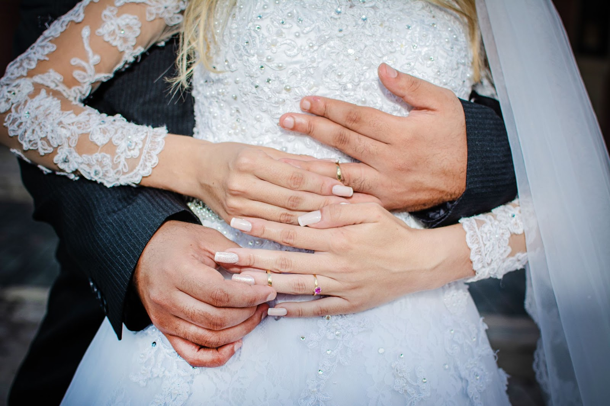
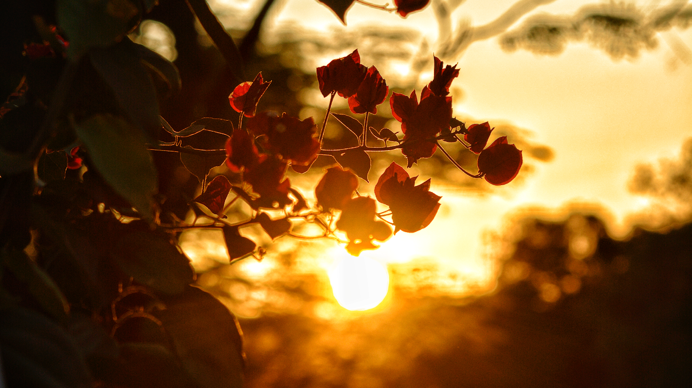

“A fotografia é uma poesia austera e ardente do real.”
“Photography is an austere and blazing poetry of the real.” – Ansel Adams

“A fotografia é uma poesia austera e ardente do real.”
“Photography is an austere and blazing poetry of the real.” – Ansel Adams
UM MOMENTO, UM CLIK, UMA HISTÓRIA ETERNIZADA!
Sou Artur Barbosa e estou no ramo da fotografia desde 2018. Toda a fotografia precisa ser feita por amor e não por obrigação. Espero que gostem das fotos que faço por amor!
Basicamente, o pré-wedding é um ensaio fotográfico que é feito de um a dois meses antes da data do casamento. Ele tem um ar bem diferente de ensaios como o trash the dress, por exemplo, pois a sessão é feita com base em temas e lugares que tenham a cara do casal. Saiba mais ...
O termo "Trash the Dress" (ou "suje o vestido", em bom português) nasceu nos Estados Unidos, e é usado para se referir a um estilo de ensaio fotográfico que pode ser feito antes ou depois do casamento, mas que foge totalmente das fotos tradicionais da cerimônia. Saiba mais ...

A Fotografia de alimentos é um gênero da fotografia dedicado aos retratos de alimentos com o objetivo de torná-los atrativos. Uma boa fotografia não é o mesmo que uma fotografia falsa! É preciso saber valorizar o seu produto como ele é sem recorrer a truques que passem a ideia de propaganda enganosa. Esse é o nosso diferencial mostrar a realidade valorizando a beleza real do seu produto. Saiba mais ...
Fotografias de paisagem são, por definição, imagens que registram os ambientes, suas peculiaridades e particularidades. Podem ser ambientes naturais, como florestas, praias, campos e montanhas, ou ambientes urbanos, como grandes metrópoles ou pequenas cidades. Saiba mais ...

Nos links abaixo você irá entrar em contato direto conosco. Teremos prazer em realizar seus ensaios conforme nossas circunstâncias.